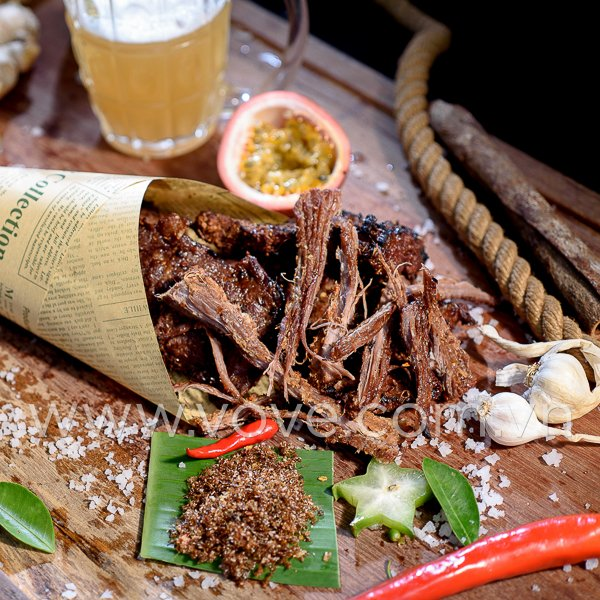
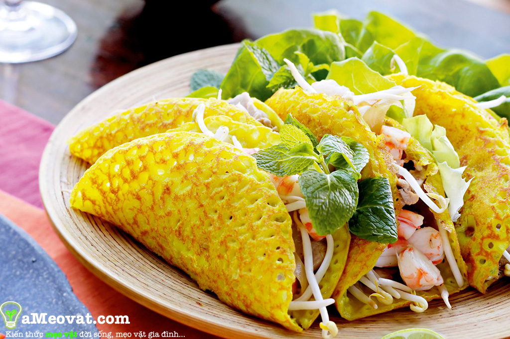
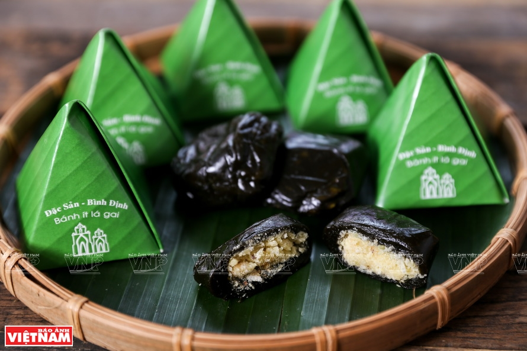

Việt Nam đất nước ta ơi
Mênh mông biển lúa đâu trời đẹp hơn.
Mì Quảng
Mì Quảng là đặc sản nổi danh không chỉ ở vùng đất Quảng Nam
mà còn phổ biến ở cả khu vực miền Trung.
Mì Quảng có nhiều loại khác nhau như mì gà, tôm, thịt, trứng, bò, sứa, cá lóc…,
mỗi loại mang một hương vị đặc trưng riêng, không lẫn vào đâu. Hòa quyện cùng sợi mì trắng ngà,
mềm mại là vị thanh ngọt và béo của nước hầm xương, mà người dân địa phương vẫn quen gọi là nước lèo hay nước nhưng.
Đến với Quảng Nam, đâu đâu du khách cũng đều có thể dễ dàng tìm đuợc một quán mì Quảng.
Có những quán vách nứa mái tranh bên sườn núi, có quán nằm yên ả bên những cánh đồng xanh mướt,
có quán lại lọt thỏm giữa phố thị ồn ào. Mì Quảng hiện diện trong bữa ăn của người dân địa phương như là một thói quen cũng như là thứ đặc sản dùng để tiếp đãi khách và bạn bè phương xa.
Chính điều này là một nét hấp dẫn riêng níu chân du khách mỗi khi có dịp ghé thăm mảnh đất này.
Bò một nắng
Khô bò một nắng Gia Lai – đặc sản mang hương vị núi rừng độc, lạ hấp dẫn khiến cho bất cứ ai trong chúng ta thưởng thức một lần đều nhớ mãi.
Từng miếng thịt hồng hồng, phảng phất hương thơm đặc trưng của nắng gió vùng Tây Nguyên hòa quyện với thứ muối chấm lạ lẫm – muối kiến vàng càng khiến cho món ăn thêm quyến rũ lạ lùng.
Bò một nắng Gia Lai trở thành đặc sản trứ danh, nổi tiếng khắp cả nước là món quà biếu thiết thực và ý nghĩa dành cho người thân và bạn bè dịp Lễ, Tết...Bò Một Nắng được làm từ thịt bò tươi,
thái thành từng miếng mỏng, ướp sơ qua với các loại gia vị, đem phơi ngoài nắng trong một ngày nên có tên gọi là bò một nắng. Sau đó đóng vào bao cất giữ, khi ăn chỉ cần lấy ra nướng chín trên bếp than hồng và thưởng thức với muối kiến vàng của người dân tộc.
Thịt bò một nắng thơm, ngọt và dai. Bạn chấm cùng muối kiến vàng thì tạo ra một hương vị độc đáo khó từ chối. Đặc biệt bò một nắng muối kiến vàng cực kỳ hợp cho những cuộc nhậu đấy


Bánh xèo
Bánh xèo từ lâu đã trở thành một món ăn thuần túy và quen thuộc trong đời sống của mỗi người dân Việt Nam.
Đặc biệt là bánh xèo Đà Nẵng thu hút thực khách do khoác lên mình "lớp áo" màu vàng vô cùng bắt mắt.
Cũng như các vùng miền khác, bánh xèo Đà Nẵng rất chú trọng ở phần bột bánh, do đó mà khâu chọn bột thường được người bán chọn lựa rất kỹ càng.
Bên trong lớp vỏ bánh vàng ươm là phần nhân với rất nhiều loại nguyên liệu. Tùy từng quán mà chiếc bánh xèo Đà Nẵng sẽ có phần nhân khác nhau, tuy nhiên thông thường bánh xèo Đà Nẵng sẽ có thịt,
tôm được tẩm ướp đậm vị cùng với giá đỗ tươi rói và ít trứng béo ngậy.
Ai đã một lần thưởng thức bánh xèo Đà Nẵng sẽ khó mà quên hương vị thơm ngon đặc trưng làm nên thương hiệu cho loại bánh dân dã nhưng dễ làm "đắm say lòng người" này.
Bún Cua
Bún cua thối (hay còn gọi là bún mắm cua, bún thối) là đặc sản ở phố núi Pleiku, tỉnh Gia Lai.
Người dân địa phương gọi tên món ăn này như vậy nhằm phân biệt với bún riêu cua hay các món chế biến từ cua khác.
Đúng như tên gọi, bún cua thối gồm 2 nguyên liệu chính là bún và cua. Thế nhưng khác hoàn toàn với các món bún hay món cua khác,
món ăn này khiến thực khách chỉ nghe tên cũng đã dè chừng vì có mùi khó ngửi, bốc lên từ thứ nước dùng màu đen đặc sệt.
Thoạt nhìn, món bún cua thôi khiến thực khách "toát mồ hôi" vì vẻ ngoài kém hấp dẫn. Món ăn chỉ có bún, măng, vài miếng da heo chiên giòn với hành phi,
đậu phộng kèm theo phần nước dùng đen ngòm, đặc sánh, bốc mùi thum thủm.
Tuy nhiên, khi thưởng thức quen rồi, sẽ cảm nhận được vị ngon, thơm đặc trưng của món ăn "trứ danh" này.

Cơm Hến
Nhắc tới Huế chắc hẳn ai cũng nghĩ tới món Cơm hến đầu tiên.
Bởi món ăn này dân dã, có mặt ở khắp nơi từ những quán ăn nhỏ trong chợ, các ngõ phố tới những nhà hàng sang trọng trong thành phố Huế.
Cơm hến chính là sự kết hợp giữa cơm nguội trộn với hến xào qua dầu và gia vị. Bên cạnh đó còn có sự hòa quyện của nước hến, mắm ruốc, bẹ chuối, rau má, rau thơm, giá đỗ, tóp mỡ.
Cơm hến đã khiến bao du ăn một lần là nhớ mãi bởi hương vị thanh mát, cay cay. Tuy nhiên, nếu không biết cách thưởng thức, món ăn này sẽ trở nên tanh và mất đi vị đậm đà.
Vì vậy, bạn nên tách riêng canh và cơm ra từng bát để nếm trọn vị ngon của món ăn đặc sản Huế này nhé.
Giờ thì cưỡng lại cái ham muốn bản thân làm gì, làm khổ cái dạ dày đang kêu gào làm chi? Chan nước dùng xâm xấp, trộn đều tô cơm, nếm thử một thìa đủ các vị các hương để thấy bằng hết những chua cay mặn ngọt của món ăn hồn cốt nơi này,
để mường tượng ra một bức tranh Huế bình dị, chân chất mà tinh tế độc đáo khôn cùng. Ăn một miếng: cay xé lưỡi, húp một miếng: ngọt tỉnh người.
Bánh ít lá Gai
Nhắc đến bánh ít lá gai Quy Nhơn, Bình Định là nhắc đến một loại bánh có vị ngọt thanh, dẻo mềm nhưng lại nói lên được tính cách của người Bình Định:
Mộc mạc, chân chất, nhưng uy hùng như ngọn tháp và luôn ấm áp lòng người.
Bánh ít lá gai Quy Nhơn, Bình Định được du khách gọi bằng cái tên “bánh gây thương nhớ”. Bởi với bất kì ai đã từng có dịp đặt chân đến mảnh đất thanh bình này đều không thể quên món bánh đặc biệt này.
Bánh ít lá gai là món ăn không thể thiếu trong cuộc sống của người dân nơi đây. Bánh được dùng để ăn chơi, làm quà cho bạn bè, người thân; đặc biệt đây là món bánh luôn đồng hành trong các dịp đại lễ,
các nghi lễ quan trọng như cúng ông bà, tổ tiên của người dân nơi đây.
Món bánh này khi thưởng thức thì khá đơn giản nhưng để làm nên hương vị đặc trưng xứ Nẫu, gây thương nhớ cho bao người, thì đó là cả một quá trình cẩn thận, tỉ mỉ, công phu và lòng yêu nghề của người làm bánh.
